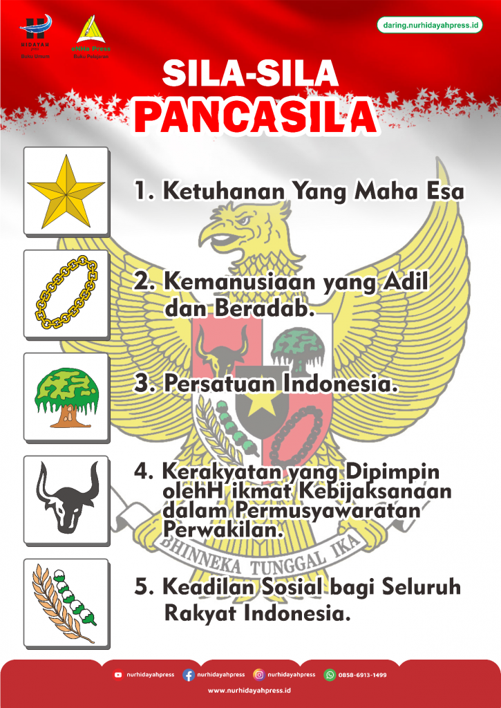
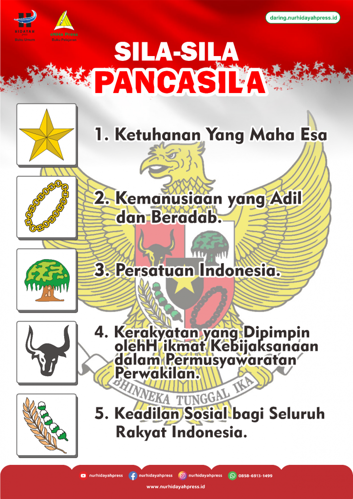

PENGALAMAN & NILAI PANCASILA
Pendidikan yang berkualitas di Indonesia tentunya terlihat masih dalam tahap berkembang, belum sepenuhnya optimal. Saya juga menyadari bahwa tidak semua anak di Indonesia mempunyai kesempatan untuk mendapatkan pendidikan yang layak dan berkualitas. Sebagian besar dari mereka berasal dari daerah terpencil atau desa yang membuat mereka susah untuk mencari ataupun mendapatkan sekolah. Saya juga menyadari bahwa meskipun mereka mempunyai sekolah, juga masih ada banyak tantangan yang dihadapi. Contohnya adalah seperti jalan dari rumah ke sekolah yang kurang memadai, fasilitas sekolah yang kurang nyaman atau kurang lengkap, dan pendidikan dari guru yang kurang dapat dipahami oleh murid. Sehingga, dari pembuatan website IL ini, saya makin menyadari bahwa bersyukur merupakan hal yang penting di kehidupan ini. Tidak hanya saya mengucapkan terima kasih kepada orang tua yang membiayai sekolah saya dan guru yang mengajar saya dengan sabar dan penuh perhatian, tetapi saya juga mengambil aksi untuk menunjukkan rasa kebersyukuran saya. Yaitu dengan menaati segala peraturan sekolah, belajar dengan giat sehingga mendapatkan nilai rapot yang memuaskan, aktif fokus di kelas untuk mendapatkan ilmu, memanfaatkan fasilitas di sekolah dengan semestinya dan berhati-hati, dan membantu teman yang mengalami kesulitan di mata pelajaran yang saya sudah kuasai. Saya juga ingin berterima kasih kepada SMP Santa Ursula Jakarta yang sudah membimbing saya selama 6 tahun sejak kelas 3 SD. Mereka telah memberikan fasilitas yang lengkap untuk pembelajaran, ruang kelas yang kondusif sehingga nyaman bagi saya untuk belajar, karyawan-karyawan yang ramah saat membersihkan sekolah dan bersedia untuk membantu, dan terutama bagi guru-guru yang membimbing saya dengan sabar sehingga mendapatkan ilmu yang banyak dan bermanfaat bagi saya. Mereka juga memberikan para siswa pengalaman dan pembelajaran yang efektif dan menyenangkan sehingga dapat memahami dan meningkatkan ilmu ataupun moral mereka. Contohnya adalah seperti seminar dari Bank Indonesia yang membuat saya tertarik dalam bidang ekonomi, laptop dari kelas 7, field trip ke ragunan, live-in kelas 8, dan retret kelas 9 yang membuat saya menyadari betapa pentingnya untuk menjaga kerohanian dan kesederhanaan untuk lebih dekat dengan Tuhan Yesus. Tanpa mereka dan jika saya tidak sekolah yang memiliki murid yang berpendidikan dikenal tinggi, mungkin saya tidak sampai dapat di titik dimana saya dapat menulis ini, mendapatkan ilmu yang bermanfaat, maupun sikap atau moral yang tidak dianggap layak. Oleh sebab itu, saya sangat bersyukur dan berterima kasih bagi orang tua saya dan tenaga kependidikan yang telah memberikan saya pendidikan yang layak untuk didapatkan, semoga perjuangan dan pengalaman-pengalaman ini tidak sia-sia dan dijadikan bekal bagi masa depan serta yang bisa saya teruskan ke generasi berikutnya dan kepada mereka yang tidak memiliki kesempatan untuk mendapatkan pendidikan yang layak.
Nilai-nilai Pancasila yang dapat saya kaitkan dengan pengalaman saya adalah sila ke-2 dan sila ke-5. Sila ke-2, yaitu kemanusiaan yang adil dan beradab, dapat dilihat selama saya di sekolah tidak hanya fokus terhadap ilmu, akan tetapi pada pembentukan nilai-nilai karakter yang bermanfaat. Contohnya adalah seperti belajar bahwa ternyata sekolah juga mementingkan nilai toleransi saat sekelas dengan murid-murid yang berbeda dari diri saya (agama, fisik, maupun karakteristik), membangun nilai kerja sama lewat berbagai proyek kerja kelompok, dan tanggung jawab saat piket kelas ataupun sesederhana mengumpulkan tugas yang diberikan sebelum tenggat waktu. Selain dari itu, sila ke-5, yaitu keadilan sosial, juga berperan penting dalam pengalaman saya selama di sekolah. Keadilan dapat dilihat bahwa saya mendapatkan pendidikan yang berkualitas dari kerja keras orang tua saya dan para guru yang telah mengajar saya sejak saya TK hingga SMP sekarang. Oleh sebab itu, hal ini membuat saya sadar bahwa pendidikan yang berkualitas dapat berperan penting dalam kehidupan dan untuk masa depan saya.